PERSONAL PROJECT · MOBILE APP · 2026
A personal planner that shows you the moment a plan breaks, then rebuilds the day in one tap.
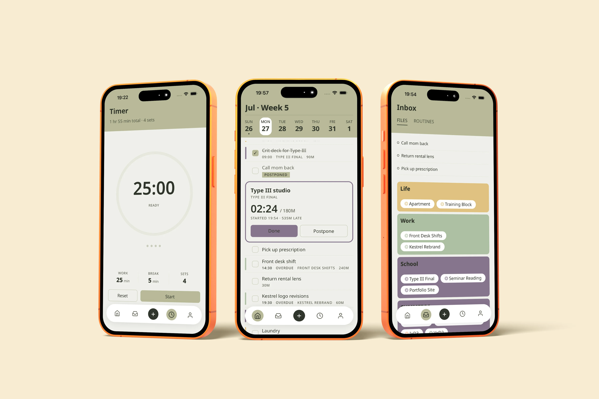
OVERVIEW
When one task runs long, everything after it becomes wrong. atrio treats that moment as the product.
WHAT IT’S FOR
Getting through a day with no room in it. atrio holds the work that has to happen today and keeps it workable when something runs long.
WHY TASKS, NOT A CALENDAR
A calendar tells you when you’re busy. It can’t help when a plan breaks, because events don’t move. What breaks is the work between them, and fixed commitments are treated as walls here, not as content.
WHAT IT ISN’T
Not a calendar replacement or a habit coach, and nothing in it is shared.
PROBLEM
No slack anywhere in the day. One task past its slot invalidates everything behind it, and the repair takes days.
WHO
Class, a shift, errands and a workout in one day, and all of it has to happen.
WHAT
One task runs long and everything after it becomes wrong.
WHEN
Mid-day, several times a week. The ripple takes days to settle.
WHERE
Inside whatever planner they use, which now only shows what is broken.
USER JOURNEY MAP — ONE TUESDAY
07:30
09:00
10:30
14:30
+2 days
WHAT HAPPENS
Run, crit deck, studio, shift, two errands, client revisions, reading. It all fits, with nothing spare.
Begins the crit deck. Estimated 90 minutes, due before studio at 11:00.
The deck isn’t finished. Studio is fixed at 11:00 and cannot move.
Shift starts. The lens return, the client revisions and the reading have nowhere left to sit.
The same four tasks get re-planned across the rest of the week, displacing that week’s work.
WHAT SHE THINKS
“Tight, but it works.”
“Done by 10:30.”
“Stop now, or show up unprepared?”
“I’ll sort it out tonight.”
“Why plan at all.”
atrio enters at 10:30, not at 21:00. Everything after the break is consequence, and none of it can be repaired by reviewing the day once it is over.
PRINCIPLES
All three rules exist to keep the app from blaming the person using it. Showing a broken day is easy; showing it without implying failure is not.
01
It stays where it was and goes quiet. No red, no strikethrough, no tally. The app says it moved to tomorrow, because that is what happened.
Rules out: streaks, completion percentages, red on anything that simply didn’t happen.
02
Everything behind a running-over task is technically at risk, and the app says nothing. Later tasks look normal until they are actually affected.
Rules out: cascading warnings and “at risk” states.
03
A single deep red, called clay, appears on one thing: the count-up on a task past its estimate while you watch it happen.
Rules out: clay anywhere but a live overrun.
FEATURES
Everything exists to shorten the distance between “my plan just broke” and “my plan works again.”
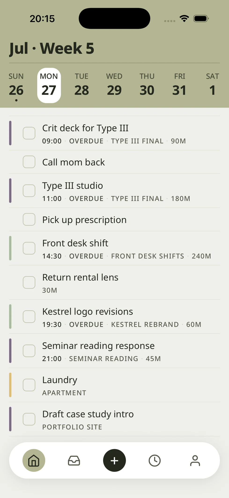
01
Area → Project → Task, both parent links optional.
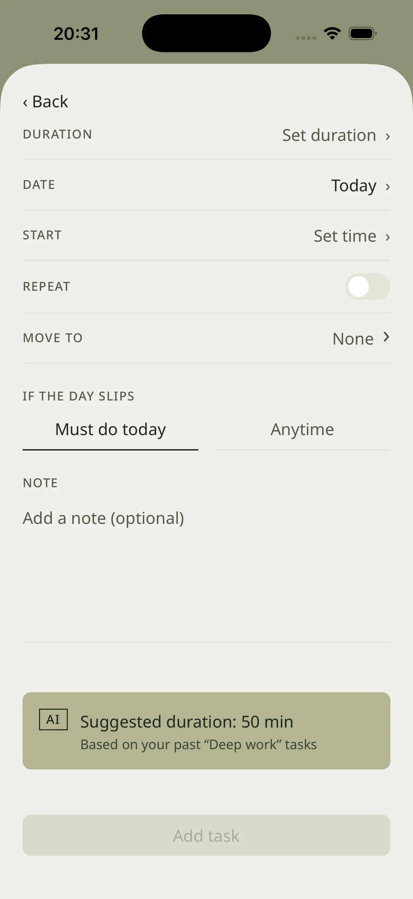
02
Every task carries an estimate; the app records the actual.
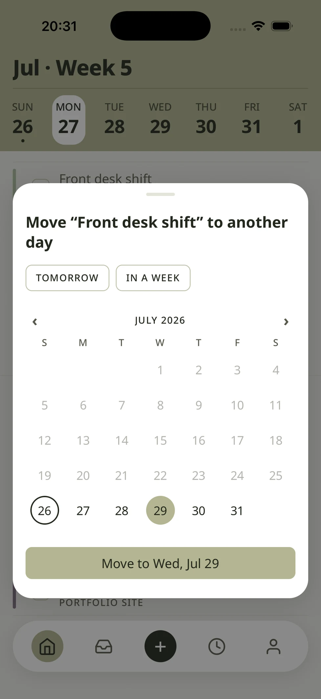
03
Fixed commitments hold; everything else moves around them.
FREE
You see the break, and you have the controls to fix it yourself.
PAID — AI
One confident plan showing only what changed. Accept, or adjust.
ALSO SHIPPED
USER JOURNEY
Plan the day, watch it run, catch the break, rebuild, close without judgment. Today · Inbox · + · Timer · Profile.
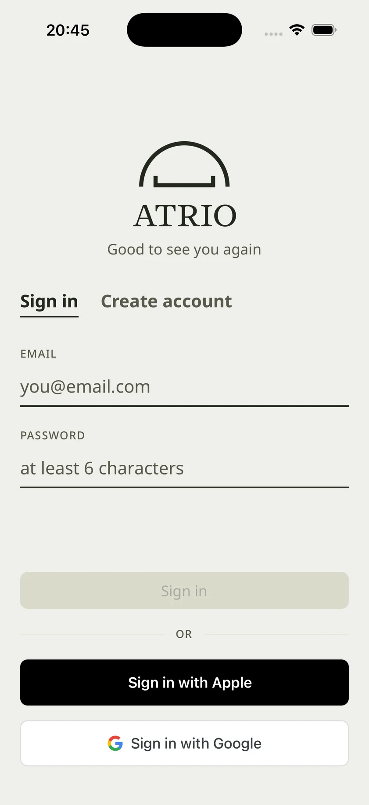
01
Motivation before structure.
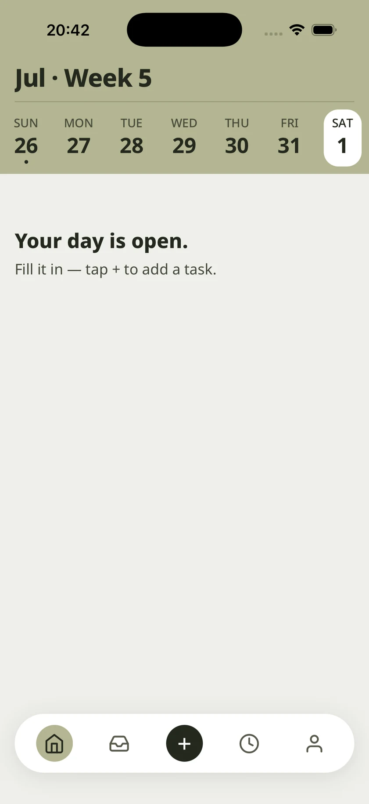
02
Date-led. Timed and untimed tasks in one flat list.
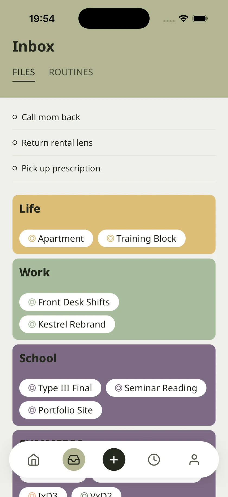
03
Area as folder, project as file.
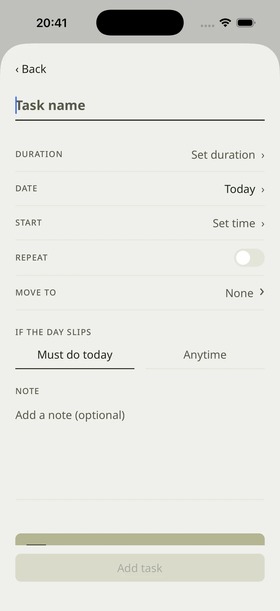
04
Duration, start, fixed toggle, deferability.
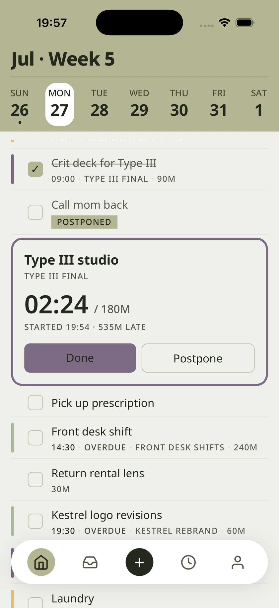
05
Large timer, progress dots, Next.
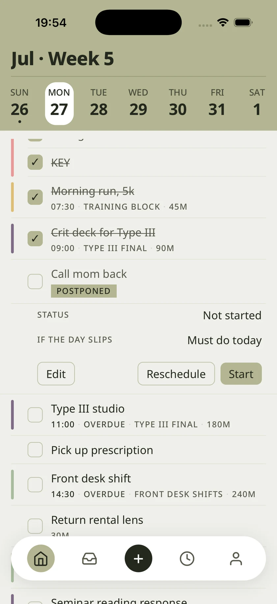
06
Clay count-up takes the lead.
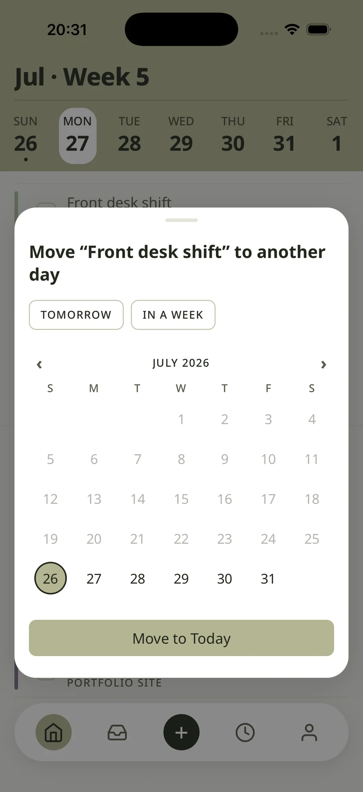
07
Auto, manual, or push everything back.
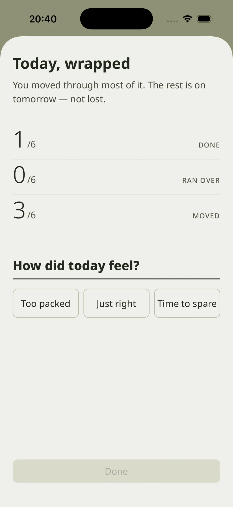
08
Numerals and a three-point feeling.
DESIGN SYSTEM
Neutrals carry the interface, sage handles interaction, clay handles collapse. All of it lives in one file.
PALETTE — FOUR THAT DO THE WORK
#EFEFEA
Paper. Almost every surface.
#23281D
Green charcoal, never black. All text.
#B3B591
Sage. Interaction only.
#C62828
Clay. Live overrun only.
Paper, leaf, stem, dried clay. Nothing is fully saturated, which is why clay registers the one moment it appears.
AREA COLOURS — CHOSEN BY THE USER
Twelve options for area colour, all held at the same low saturation so no area outshouts another.
#7B6C83
#B2A8C4
#9F707D
#DC9C99
#D48769
#F0AF8A
#DDBE95
#D2BCAB
#D8BF80
#C5C0A0
#ABBB9F
#7B8D7A
TYPE SCALE — INTER, TABULAR FIGURES ALWAYS ON
40 / 46 · Semi Bold
26 · Semi Bold
21 · Semi Bold
18 · Medium
15 · Regular
11 · Medium
STRUCTURAL RULES
22px gutter, whitespace, hairlines. No cards, no shadows.
Tabular figures always on. Large numerals carry character.
Sheets and overlays only. Never in-app screens.
withTiming only. Transitions and nav pill share 240ms.
COMPONENTS
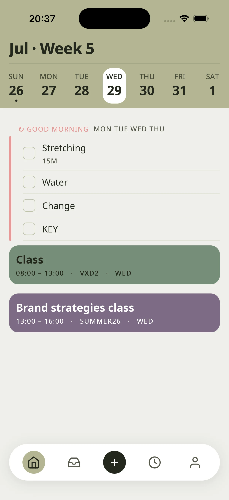
Floating pill, five slots, sage marker.
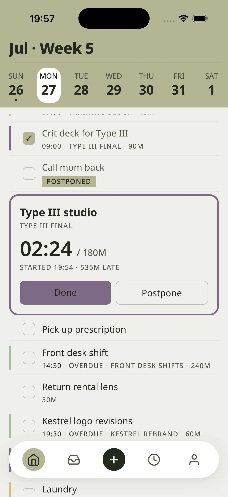
Full-bleed, live clock, clay past estimate.
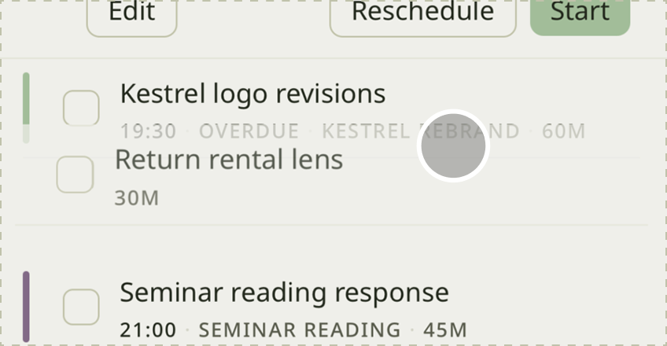
old → new, muted to ink.
CLOSING
It started as a course assignment about a problem I had every week. It became the project where I learned that holding one rule steady beats any individual screen.
WHAT HELD UP
Scoping to the instant of disruption. It kept the project from becoming a habit coach.
One plan instead of a menu. Options during a collapse just add to the pile.
Restricting clay to live collapse. A warning colour stops working once it turns up somewhere ordinary.
WHAT I WOULD CHANGE
I settled the structure before the disruption flow was real, so parts of it were built for the diagram rather than for the screen.
Estimation quality is the whole dependency, and I tested it last.